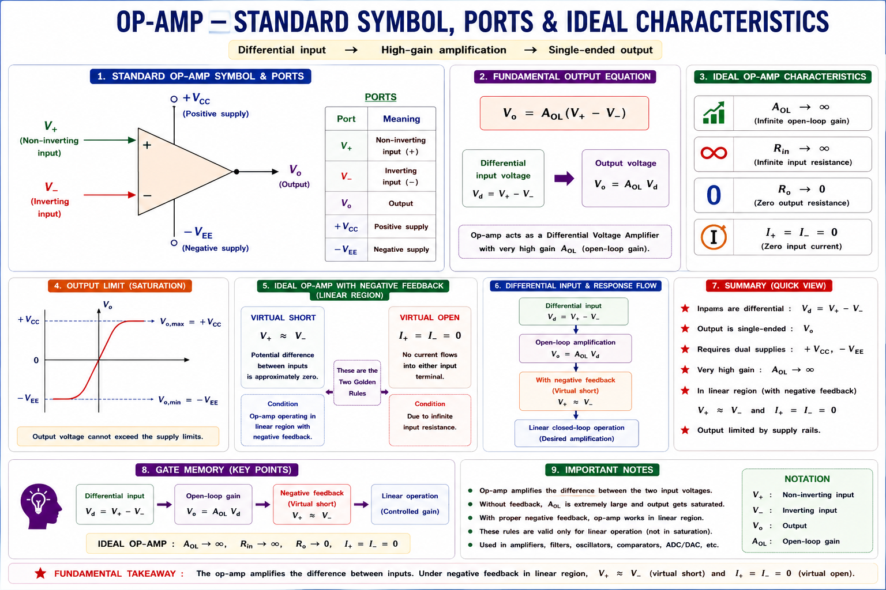
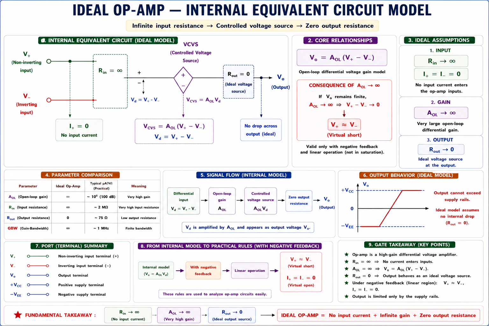
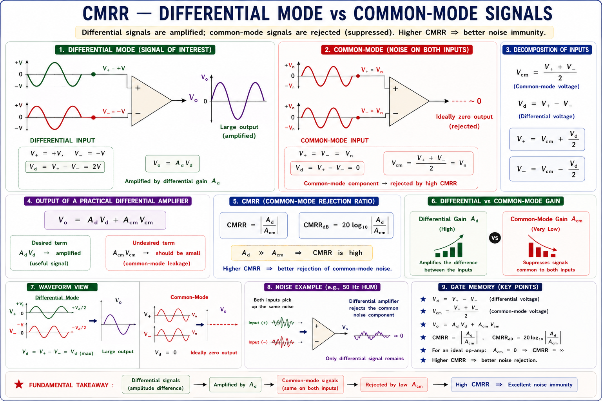
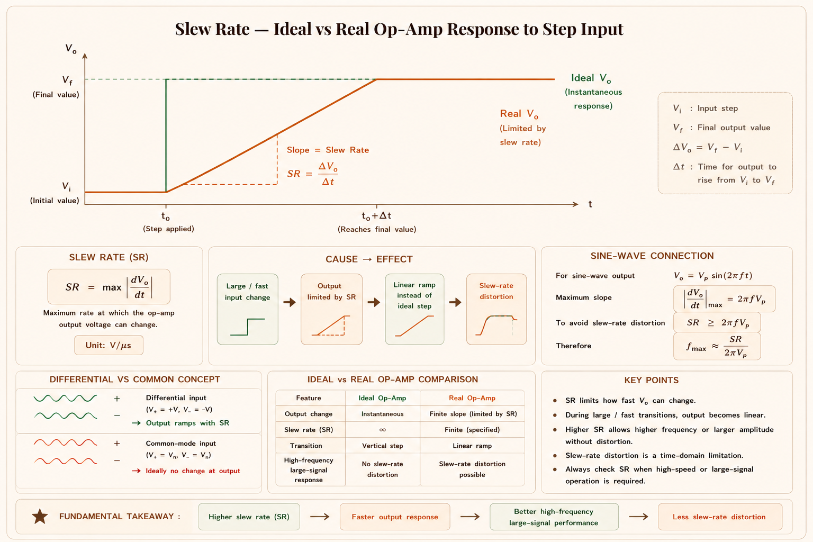
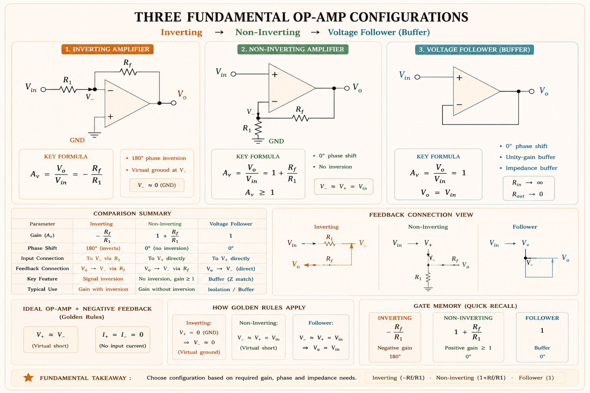
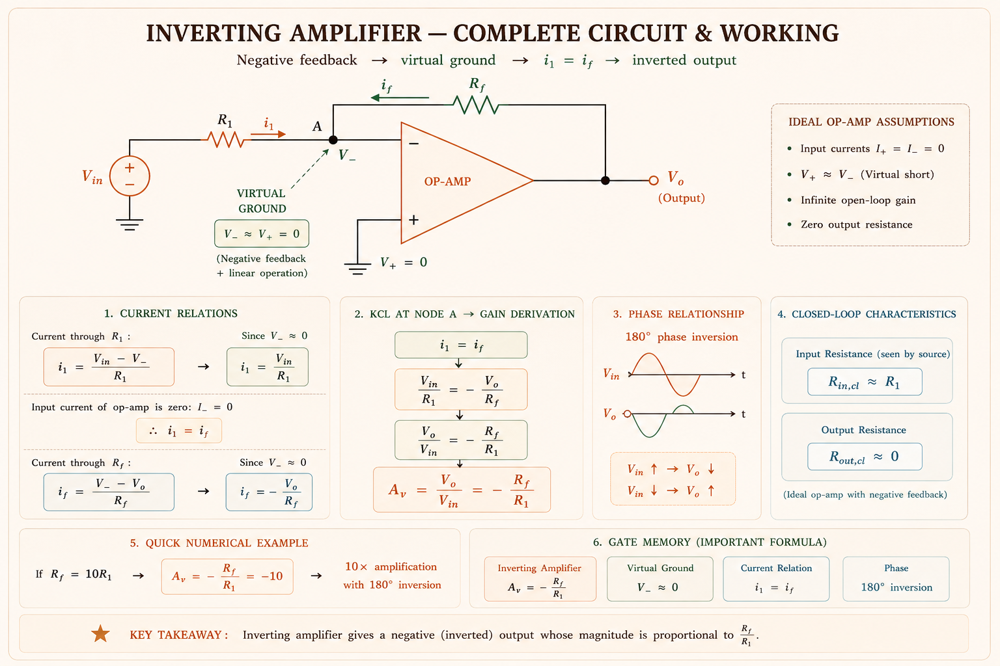
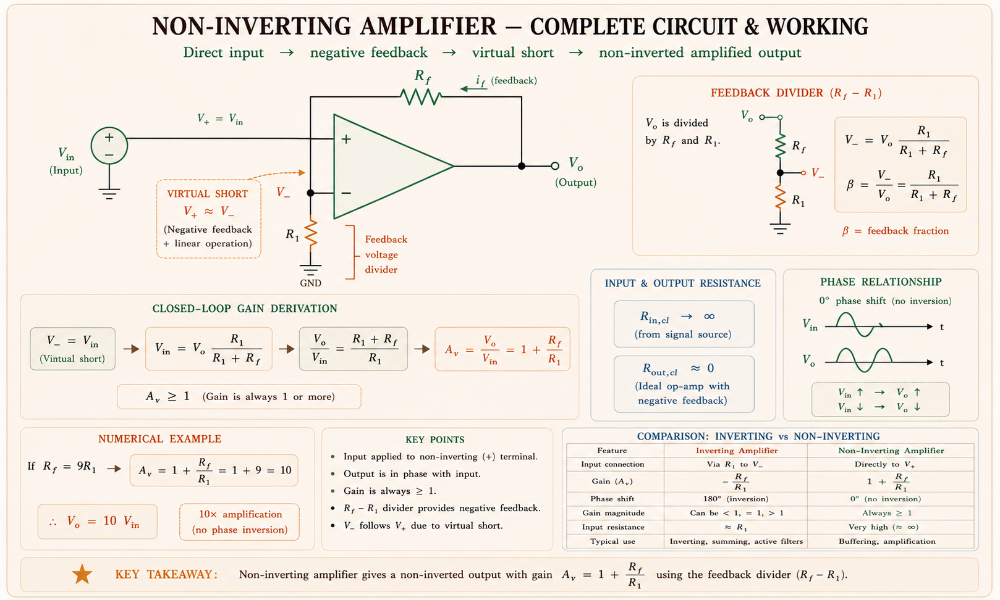
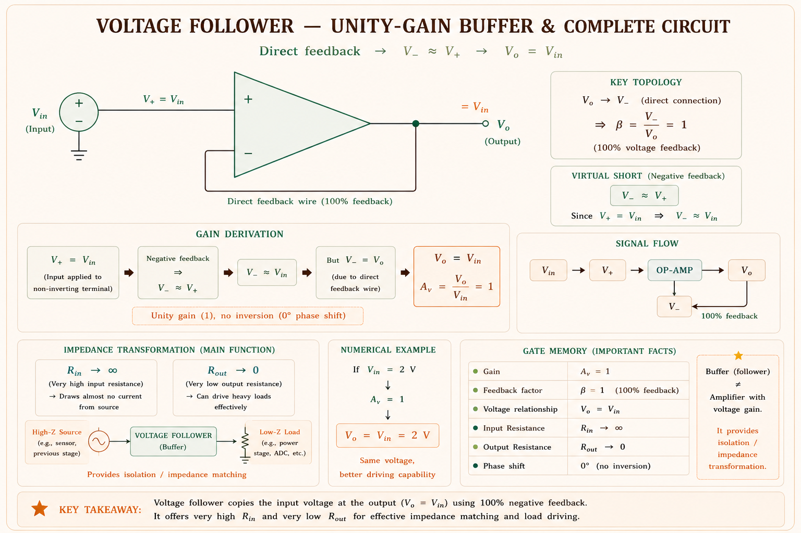

Ideal and practical op-amp characteristics, \(CMRR\), \(PSRR\), slew rate, offset voltage, inverting and non-inverting amplifier configurations, voltage follower — comprehensive GATE, IES, and PSU exam coverage with full derivations, SVG diagrams, and solved examples.
Before the op-amp existed, engineers had to build amplifiers, adders, integrators, and differentiators from discrete transistors — a slow, expensive, and temperature-sensitive process. The Operational Amplifier (op-amp) was born in the 1940s in analog computers to perform mathematical operations: addition, subtraction, integration, and differentiation on voltages. That is where the name "operational" comes from.[1]
Think of the op-amp as a voltage-controlled voltage amplifier with two inputs and one output. Its magic is that when you add external resistors and capacitors, you can make it do almost any linear signal processing task. The op-amp itself is just a very high-gain differential amplifier packaged into a tiny chip (e.g., the ubiquitous μA741).

The ideal op-amp is a mathematical model used for simplified circuit analysis. It defines four key properties that real op-amps approximate but never perfectly achieve. Understanding the ideal model first makes it easy to identify where and why real op-amps deviate.[1][2]
Rule 1 — Virtual Short: \(V_+ = V_-\) (the two input terminals are at the same potential). Rule 2 — No Input Current: \(i_+ = i_- = 0\) (infinite input resistance means no current enters either terminal). These two rules are sufficient to analyse any op-amp circuit in the negative-feedback configuration.

The differential input voltage \(V_d = V_+ - V_-\) is amplified by \(A_{OL}\). Since \(A_{OL} \to \infty\) and the output must remain finite (supply-limited), the only possibility in any stable negative-feedback circuit is \(V_d \to 0\), i.e., \(V_+ \approx V_-\). This is the virtual short circuit condition — the cornerstone of all op-amp analysis.
No current flows into either the inverting (\(V_-\)) or non-inverting (\(V_+\)) terminal. Mathematically: \(i_+ = i_- = 0\). This means the op-amp does not load the source connected to its inputs. In circuit analysis, you can treat both input terminals as open circuits for current — yet they are still at the same voltage (virtual short).
The output terminal behaves as a perfect voltage source: \(V_{out}\) is independent of the load current drawn. No matter how much current the load demands, the output voltage does not sag. This means the op-amp has perfect voltage driving capability — you can connect any load without gain error. In reality, the output has a finite current limit (±25 mA for μA741).
| Parameter | Ideal Value | Physical Meaning | μA741 Typical |
|---|---|---|---|
| Open-loop gain \(A_{OL}\) | \(\infty\) | Output/differential input ratio in open loop | ~\(10^5\) (100 dB) |
| Input resistance \(R_{in}\) | \(\infty\) | Impedance seen between \(V_+\) and \(V_-\) | ~2 M\(\Omega\) |
| Output resistance \(R_{out}\) | 0 | Source impedance at \(V_{out}\) terminal | ~75 \(\Omega\) |
| Bandwidth \(BW\) | \(\infty\) | Frequency range of amplification | ~1 MHz GBP |
| \(CMRR\) | \(\infty\) | Rejection of common-mode signals | ~90 dB |
| Slew Rate | \(\infty\) | Max output voltage rate of change (V/\(\mu\)s) | ~0.5 V/\(\mu\)s |
| Offset Voltage \(V_{OS}\) | 0 | Input voltage for zero output | ~\(2\text{ mV}\) |
| Supply voltage rejection | \(\infty\) | Output insensitivity to supply variation | ~90 dB \(PSRR\) |
Many students confuse "virtual short" with "actual short". In a virtual short, \(V_+ = V_-\) but no current flows between them (\(R_{in} = \infty\)). An actual short would allow current to flow freely. Never connect \(V_+\) to \(V_-\) directly — that eliminates the differential input. The virtual short is a consequence of negative feedback + infinite gain, not a physical connection.
Real op-amps deviate from the ideal in several important ways. GATE and IES frequently test these non-ideal parameters because they determine the practical performance limits of analog circuits. The four most tested are: \(CMRR\), \(PSRR\), Slew Rate, and Input Offset Voltage.[1][3]
When the same signal is applied to both inputs (a common-mode signal), an ideal op-amp outputs zero — it should only amplify the difference. But a real op-amp slightly amplifies the common-mode signal too. \(CMRR\) measures how well the op-amp rejects this unwanted common-mode component.

In an ECG amplifier, the tiny heart signal (millivolts) rides on a large 50 Hz mains noise (volts) common to both electrodes. A high \(CMRR\) (say 120 dB) means the noise is rejected by a factor of 10⁶ — the ECG trace remains clean. This is why medical instrumentation amplifiers specify \(CMRR\) as a primary parameter.
\(PSRR\) measures how much the op-amp output changes when the supply voltage (\(V_{CC}\) or \(V_{EE}\)) changes, while inputs are held constant. It is the ratio of differential gain to the gain seen from power supply to output.
In a switching power supply, the op-amp used as error amplifier must have high \(PSRR\) because its own supply rail has switching noise (100 kHz + harmonics). If \(PSRR\) is low, the noise couples to the output, degrading the regulation quality. Modern op-amps achieve \(PSRR\) > 100 dB at DC, but \(PSRR\) falls at higher frequencies — this must be checked in the datasheet Bode plot.
Slew Rate is the maximum rate at which the op-amp output voltage can change, regardless of the input. It is an internal limit caused by the charging rate of the internal compensation capacitor. Even if you apply an instantaneous step input, the output cannot follow instantaneously — it slews at the maximum \(SR\).

Slew rate limits the maximum frequency at which a full-swing sinusoidal output can be produced without distortion. The full-power bandwidth is: \(f_{max} = \frac{SR}{2\pi V_{peak}}\). For μA741 with \(SR\) = \(0.5\text{ V/}\mu\text{s}\) and \(V_{peak}\) = 10 V: \(f_{max} = \frac{0.5 \times 10^6}{2\pi \times 10} \approx 8 \text{ kHz}\). At frequencies above this, the output sine wave becomes a triangle wave!
Due to mismatches in the differential pair transistors inside the op-amp, a small DC voltage exists between \(V_+\) and \(V_-\) even when both inputs are grounded. This is the input offset voltage \(V_{OS}\). When amplified by the closed-loop gain, it creates a DC error at the output that shifts the operating point.
Real op-amps draw small base currents into both input terminals (BJT input stages). The input bias current \(I_B = \frac{I_{B+} + I_{B-}}{2}\) causes a voltage drop across source resistance, creating another DC error. The input offset current \(I_{OS} = |I_{B+} - I_{B-}|\) measures their mismatch. For μA741: \(I_B \approx 80\text{ nA}\), \(I_{OS} \approx 20\text{ nA}\). JFET input op-amps (TL071) have \(I_B\) in pA range.
Op-amps are rarely used open-loop (too much gain — output saturates). Almost all practical circuits use negative feedback: a fraction of the output is fed back to the inverting input (\(V_-\)), which reduces gain but dramatically improves bandwidth, linearity, and stability. The specific feedback network determines the circuit function.[2]

The inverting amplifier is the most commonly used op-amp circuit. The signal is applied to the inverting (−) terminal through resistor \(R_1\). Feedback resistor \(R_f\) connects the output back to the inverting terminal. The non-inverting (+) terminal is grounded.[1][2]

Step 1 — Apply ideal op-amp rules. Since \(V_+\) = 0 V (grounded) and virtual short gives \(V_-\) = \(V_+\), the inverting terminal is also at 0 V. Node A is called a virtual earth (or virtual ground): it is at 0 V potential but draws no current from the circuit.
Step 2 — KCL at node A. By Kirchhoff's Current Law at the virtual earth node (no current enters the op-amp terminal):
Step 3 — Solve for closed-loop gain Av:
In the inverting amplifier, the input resistance as seen by the source is simply \(R_1\), not infinity. This is because the inverting terminal is a virtual ground — \(V_-\) = 0 V always — so the full \(V_{in}\) appears across \(R_1\). This is a key difference from the non-inverting configuration where \(R_{in}\) is very large.
By adding multiple input resistors to the virtual ground node, the inverting amplifier becomes a summing amplifier:
In the non-inverting configuration, the signal is applied directly to the non-inverting (+) terminal. This means the input impedance seen by the source is extremely high (essentially the op-amp's differential input resistance, typically megaohms). The feedback divider (\(R_1\) and \(R_f\)) connects between output and the inverting terminal.[1][2]

Step 1 — Virtual short. By the ideal op-amp rule, \(V_- = V_+ = V_{in}\). The voltage at the inverting terminal equals the input.
Step 2 — Voltage divider. The feedback network (\(R_1\) and \(R_f\)) forms a voltage divider between \(V_{out}\) and ground:
Step 3 — Solve for gain:
The closed-loop gain can also be derived from feedback theory: \(A_{CL} = \frac{A_{OL}}{1 + A_{OL}\beta}\). As \(A_{OL} \to \infty\): \(A_{CL} \to \frac{1}{\beta} = \frac{R_1 + R_f}{R_1} = 1 + \frac{R_f}{R_1}\). This confirms the formula. The gain depends only on the resistor ratio, not on \(A_{OL}\) — making it very stable and temperature-insensitive.
The voltage follower is a special case of the non-inverting amplifier with \(R_f\) = 0 (short circuit) and \(R_1\) = \(\infty\) (open circuit). The output is directly fed back to the inverting input, creating 100% negative feedback (\(\beta\) = 1).[2]

INN: Inverting → signal to Inverting input, gain is Negative; Non-inverting → signal to Non-inv input, gain = 1+\(R_f\)/\(R_1\); Null resistors → unity (voltage follower). Remember: "Inverting Nullifies, Non-Inverting Nails 1+R".
An op-amp circuit has \(R_1\) = \(10\text{ k}\Omega\) and \(R_f\) = \(100\text{ k}\Omega\) in inverting configuration. The closed-loop voltage gain \(A_v\) is:
✔ Solution: \(A_v = -\frac{R_f}{R_1} = -\frac{100\,k\Omega}{10\,k\Omega} = -10\). The negative sign confirms 180° phase inversion. Never forget the sign in GATE!
For an op-amp with differential gain \(A_d\) = 10⁵ and common-mode gain \(A_{cm}\) = 0.1, the \(CMRR\) in dB is:
✔ Solution: \(\text{CMRR} = 20\log\left(\frac{10^5}{0.1}\right) = 20\log(10^6) = 120\text{ dB}\)
An op-amp has a slew rate of 1 V/µs. The maximum frequency at which a 5 V peak sinusoidal output can be produced without distortion is approximately:
✔ Solution: \(f_{max} = \frac{SR}{2\pi V_{peak}} = \frac{1\times10^6}{2\pi\times5} = \frac{10^6}{31.4} \approx 31.8\text{ kHz}\)
In a non-inverting op-amp circuit, \(R_1\) = 5 kΩ and \(R_f\) = 45 kΩ. Find the output voltage if \(V_{in}\) = 0.2 V.
✔ Solution: \(A_v = 1+\frac{45k}{5k} = 1+9 = 10\). \(V_{out} = 10\times0.2 = 2.0\text{ V}\)
🟢 Very High: Inverting and non-inverting gain formulas, virtual ground concept, \(CMRR\) calculation, slew rate and full-power bandwidth, voltage follower properties.
🟡 Medium: Effect of finite \(A_{OL}\) on gain, gain-bandwidth product, offset voltage output error, summing amplifier, input bias current compensation.
🔴 Lower (but asked): \(PSRR\), instrumentation amplifier, difference amplifier derivation, integrator, differentiator frequency response.
Step 1 — Apply gain formula: \(A_v = -\frac{R_f}{R_1}\)
Step 2 — Output voltage:
The negative sign means the output is 180° out of phase. The magnitude is 2 V.
Step 1 — Calculate required rate of change of output:
\(V_{out, peak} = A_v \times V_{in, peak} = 10 \times 2 = 20\text{ V peak}\).
Step 2 — Compare with \(SR\):
Required rate = 2.51 V/µs > \(SR\) = \(0.5\text{ V/}\mu\text{s}\).
Conclusion: Yes, the output will be distorted. The op-amp cannot follow the fast output swing — the sine wave becomes a triangle wave (slew-rate limited).
Step 3 — Maximum undistorted frequency:
Step 1 — Find \(A_{cm}\) from \(CMRR\):
Step 2 — Output components:
The noise error is 0.2 V on a 5 V signal — a 4% error. This illustrates why high \(CMRR\) is critical in precision measurement systems.
(a) Without buffer — voltage divider loading:
The load only sees 29.7 mV instead of 3 V — a 99% signal loss due to loading!
(b) With voltage follower:
The buffer presents \(R_{in}\) → ∞ to the sensor. No voltage divider loading occurs.
The op-amp buffer eliminates the loading effect entirely — this is the fundamental purpose of the voltage follower.
\(A_{OL} = \infty\), \(R_{in} = \infty\), \(R_{out} = 0\), \(BW = \infty\), \(CMRR = \infty\), \(V_{OS} = 0\). Golden rules: \(V_+ = V_-\) (virtual short); \(i_+ = i_- = 0\) (no input current).
\(A_v = -R_f/R_1\). Phase: 180°. \(R_{in} = R_1\) (virtual ground at \(V_-\)). Signal at \(V_-\) via \(R_1\). Feedback via \(R_f\).
\(A_v = 1 + \frac{R_f}{R_1}\). Phase: 0°. \(R_{in} \approx \infty\). Signal at \(V_+\). Feedback divider (\(R_f\), \(R_1\)) from output to \(V_-\). \(A_v \geq 1\) always.
\(A_v = 1\). Phase: 0°. \(R_{in} = \infty\), \(R_{out} = 0\). Special case: \(R_f\)=0, \(R_1\)=∞. Use for impedance buffering (ADC, sensor isolation).
\(CMRR = 20\log\left(\frac{A_d}{A_{cm}}\right)\text{ dB}\). High \(CMRR\) → good noise rejection. \(PSRR\): supply ripple → output. Both → ∞ in ideal op-amp.
\(SR = \left.\frac{dV}{dt}\right|_{max}\text{ (V/\mu s)}\). μA741: \(0.5\text{ V/}\mu\text{s}\). Full-power \(BW\): \(f = \frac{SR}{2\pi V_{peak}}\). Below \(SR\) → linear; above → distorted (triangle wave).
1) Forgetting the negative sign in inverting amplifier gain — GATE specifically traps this. 2) Confusing "virtual short" (\(V_+ = V_-\), no current) with "actual short" (wire). 3) Applying slew rate formula without checking if output is actually slew-limited. 4) Thinking voltage follower has no use because gain=1 — it is an impedance transformer. 5) Using \(CMRR\) formula in linear scale instead of dB (factor of 20, not 10).
Ask any question about operational amplifiers. Try: derivations, GATE numericals, concept doubts, or circuit analysis.
All technical content is derived from the following standard textbooks. All explanations, derivations, diagrams and examples are original to Aarova AI.